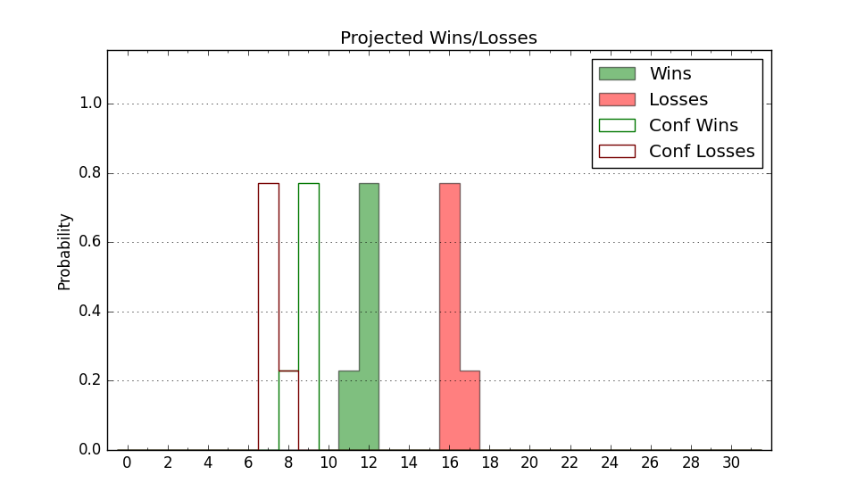

| Home | Game Probabilities | Conferences | Preseason Predictions | Odds Charts | NCAA Tournament |
| City: | Erie, Pennsylvania | |
| Conference: | Northeast (4th)
| |
| Record: | 8-7 (Conf) 11-16 (Overall) | |
| Ratings: | Comp.: -19.5 (341st) Net: -19.5 (341st) Off: 97.1 (326th) Def: 116.6 (340th) SoR: 0.0 (123rd) |
| Remaining | ||||||
|---|---|---|---|---|---|---|
| Date | Opponent | Win Prob | Pred. | |||
| 2/27 | Chicago St. (356) | 77.3% | W 72-64 | |||
| Previous | Game Score | |||||
| Date | Opponent | Win Prob | Result | Off | Def | Net |
| 11/4 | @George Washington (138) | 6.1% | L 59-76 | -0.5 | 7.8 | 7.3 |
| 11/6 | @Morgan St. (343) | 36.0% | W 78-73 | 2.4 | 11.4 | 13.8 |
| 11/13 | Canisius (360) | 79.7% | W 62-52 | -19.0 | 12.9 | -6.1 |
| 11/16 | @Columbia (269) | 17.5% | L 63-77 | -3.0 | -2.0 | -5.0 |
| 11/24 | @Air Force (283) | 19.9% | L 48-82 | -16.0 | -26.5 | -42.4 |
| 11/27 | @California (107) | 4.4% | L 55-81 | -10.7 | 6.0 | -4.7 |
| 11/30 | @Sacramento St. (330) | 29.4% | W 66-60 | 8.7 | 9.7 | 18.3 |
| 12/1 | @San Francisco (64) | 1.8% | L 59-87 | 7.3 | -7.7 | -0.4 |
| 12/7 | Lafayette (285) | 46.6% | L 73-77 | 12.5 | -17.9 | -5.4 |
| 12/15 | @Kent St. (152) | 6.8% | L 57-82 | -2.0 | -10.4 | -12.4 |
| 12/18 | @Binghamton (302) | 22.4% | L 60-62 | -5.8 | 11.9 | 6.1 |
| 12/22 | @West Virginia (43) | 1.1% | L 46-67 | -7.8 | 22.1 | 14.3 |
| 1/3 | Stonehill (310) | 51.7% | W 76-69 | 1.7 | 4.7 | 6.5 |
| 1/5 | Central Connecticut (180) | 24.0% | L 50-62 | -10.0 | 7.8 | -2.2 |
| 1/10 | @St. Francis PA (318) | 26.4% | L 59-73 | -2.9 | -7.4 | -10.3 |
| 1/12 | @Le Moyne (353) | 40.1% | L 63-79 | -8.7 | -18.8 | -27.4 |
| 1/18 | @Wagner (348) | 37.7% | W 69-65 | 16.2 | -2.8 | 13.3 |
| 1/20 | @LIU Brooklyn (311) | 24.3% | L 63-72 | -6.4 | 4.6 | -1.9 |
| 1/24 | Wagner (348) | 67.4% | W 71-66 | 15.0 | -15.5 | -0.6 |
| 1/26 | LIU Brooklyn (311) | 52.2% | W 85-80 | 2.3 | 3.4 | 5.7 |
| 1/30 | St. Francis PA (318) | 54.9% | W 62-58 | -15.4 | 19.4 | 4.0 |
| 2/1 | @Fairleigh Dickinson (306) | 23.1% | W 67-60 | 4.6 | 17.5 | 22.1 |
| 2/6 | @Chicago St. (356) | 49.9% | L 78-85 | 8.1 | -10.5 | -2.4 |
| 2/8 | Le Moyne (353) | 69.5% | W 82-78 | 11.5 | -9.9 | 1.6 |
| 2/13 | @Central Connecticut (180) | 8.5% | L 63-73 | 3.8 | 5.6 | 9.4 |
| 2/15 | @Stonehill (310) | 23.9% | L 73-85 | 13.5 | -25.5 | -12.0 |
| 2/20 | Fairleigh Dickinson (306) | 50.6% | W 65-60 | -7.3 | 16.4 | 9.1 |
| Stats & Trends | |||||
|---|---|---|---|---|---|
| Current | Day | Week | Month | Season | |
| Composite | -19.5 | -0.0 | -0.0 | +1.1 | -9.5 |
| Comp Rank | 341 | -- | -- | +8 | -74 |
| Net Efficiency | -19.5 | -0.0 | +0.1 | +2.0 | -- |
| Net Rank | 341 | -- | -- | +8 | -- |
| Off Efficiency | 97.1 | -0.1 | +0.1 | +1.7 | -- |
| Off Rank | 326 | -- | -- | +2 | -- |
| Def Efficiency | 116.6 | +0.0 | -0.0 | +0.3 | -- |
| Def Rank | 340 | +1 | +2 | -- | -- |
| SoS Rank | 344 | -- | -3 | -41 | -- |
| Exp. Wins | 11.8 | +0.0 | +0.2 | +2.3 | -2.0 |
| Exp. Conf Wins | 8.8 | +0.0 | +0.2 | +2.3 | -1.2 |
| Conf Champ Prob | 0.0 | -- | -- | -0.2 | -33.0 |

| Advanced Stats | ||
|---|---|---|
| Stat | Value | Rank |
| Off Eff FG % | 0.463 | 327 |
| Off Ast Ratio | 0.147 | 171 |
| Off ORB% | 0.198 | 353 |
| Off TO Rate | 0.150 | 190 |
| Off FT Ratio | 0.287 | 302 |
| Def Eff FG % | 0.580 | 357 |
| Def Ast Ratio | 0.165 | 318 |
| Def ORB% | 0.371 | 358 |
| Def TO Rate | 0.164 | 84 |
| Def FT Ratio | 0.432 | 346 |